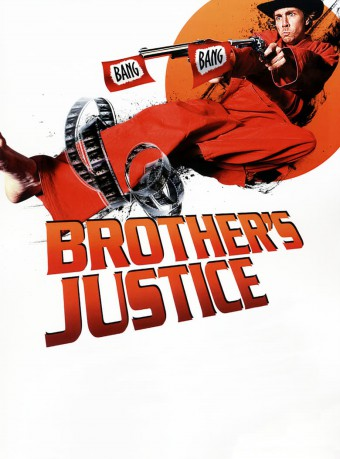
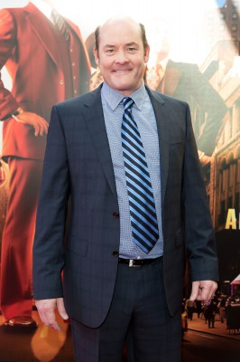

#10465 Brother's Justice
 
 IMDB-Wertung: 4.6 / 10
IMDB-Wertung: 4.6 / 10  Metascore: 22
Metascore: 22 
Dax Shepard, ein ambitionierter Regisseur, möchte sein Debüt geben und überlegt sich eine, in seinen Augen, geniale Story: Ein Sitcom-Star möchte nicht mehr der komische Typ sein, für den ihn alle halten sondern viel lieber ein Martial-Arts-Kämpfer. Dax beginnt, mit Hilfe des Produzenten Nate Tuck und seinem Kumpel Tom Arnold eine große Actionstory zu schreiben. Das Dumme ist nur, dass keines der großen Studios auch nur ansatzweise Interesse zeigt. Dass seine Ideen allenfalls mittelmäßig bis niveaulos sind, will er nicht wahr haben. Je intensiver er versucht, seinen Film zu etwas Besonderem zu machen, desto schlimmer wird es …
Jahr: 2010
Dauer: 80 Minuten
FSK: 16
Land: USA Studio: Well Go USA EntertainmentTonspuren: DD2.0 - ,
Untertitel:
Auflösung: 1080p (1920x1080) Größe: 5007 MB
Genre: Komödie
Regisseur: David Palmer, Dax Shepard
Drehbuch: Dax Shepard
Soundtrack: Julian Wass
Darsteller:
 Dax Shepard als Himself / Waylan / Patrick Jeung / Patrick Justice
Dax Shepard als Himself / Waylan / Patrick Jeung / Patrick Justice- Nate Tuck als Nate
- Andrew Panay als Andres
 Ashton Kutcher als Himself
Ashton Kutcher als Himself Tom Arnold als Himself / Mark 'Pappy' Jeung
Tom Arnold als Himself / Mark 'Pappy' Jeung Jon Favreau als Himself
Jon Favreau als Himself- Josh Temple als Willie
 Bradley Cooper als Himself / Dwight Sage
Bradley Cooper als Himself / Dwight Sage-  David Koechner als Himself / Senior
- Michael Rosenbaum als Dwayne Sage
 Ryan Hansen als Lance Jeung
Ryan Hansen als Lance Jeung- Steve Tisch als Steve
 Seth Green als Himself
Seth Green als Himself- David Palmer als Camera Guy
- Greg Siegel als Greg
- James Feldman als James
- Laura Labo als Laura
- Rome Shadanloo als Waylan's Love
- Chevonne Moore als Chevonne
- Jordan Morris als Jordan
- Charlie Koechner als Charlie
- Jess Rowland als Rick
- Margot Koechner als Herself
Datei: X:\NEU\Brother's Justice (2010, FSK16, 1920x1080).mkv seit 11.01.2019
 Es gibt insgesamt 187 Filme in der Gruppe 'NEU'
Es gibt insgesamt 187 Filme in der Gruppe 'NEU'